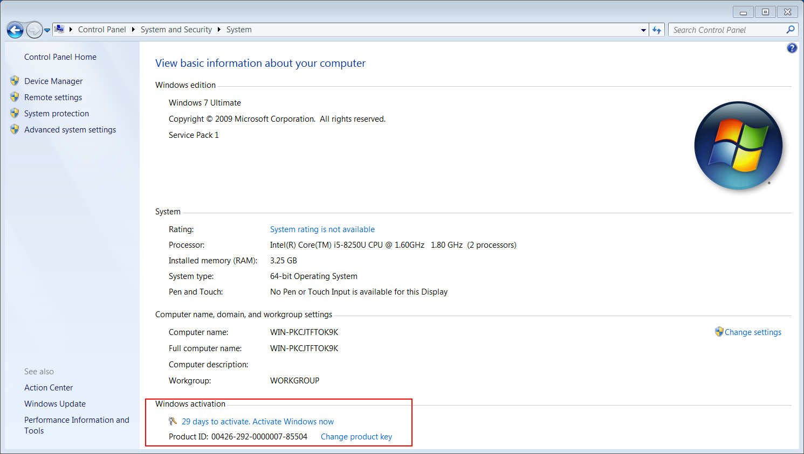
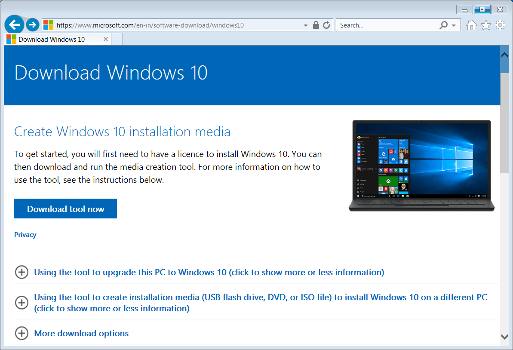

自 2020/01/14 始，微软将对 Windows 7 停止一切安全更新，换言之，未来一段时间，它将成为网络攻击的主要目标（即使之前就是如此）。
如果你仍不愿意放弃 Windows，为安全起见，我唯一的建议就是使用 Windows 10。虽然重装系统几乎不需要专业知识，但大众仍对此望而却步。
好在有办法可以在不重装系统的情况下升级到 Windows 10。（尽管下述文字试图讲清这件事，但我更推荐你阅读 微软官方的声明与建议 ）
显示类型扩展名
Windows 默认隐藏已知文件类型扩展名，这极为不便，我们需要修改它。
- 打开
文件资源管理器，左键单击组织->文件夹和搜索选项
- 单击
View，取消勾选隐藏已知类型文件扩展名并确认
明确系统版本&状态
确认当前操作系统的名称、版本及激活情况。
按下
WIN+R，启动运行窗口输入
cmd并确认，启动控制台
- 在控制台输入
systeminfo并回车确认（为避免编辑错误，强烈建议复制该命令，并在控制台单击鼠标右键进行粘贴）
- 你的 Windows 7 的版本决定了你可以省级到的 Windows 10 的版本，Windows 7 Starter，Home Basic 和 Home Premium 将升级到 Windows 10 Home，而其他 Windows 7 Professional 和 Ultimate 版本将被 Windows 10 Pro 取代
激活当前系统
下载并解压系统激活工具 AAct v3.8.4 Portable.rar 激活当前操作系统，若已经激活，跳至下一步 获取 Product Key。
- 双击
AAct_x64.exe
- 双击
Windows Activation
控制面板->系统与安全->系统查看激活情况

获取 Product Key
查看已激活系统的 Product Key。
- 下载Key查看工具 Magical Jelly Bean Keyfinder
- 启动下载后的程序，复制
Product Key
升级 Windows
微软官方提供的工具，可以在不重装操作系统的前提下更新 Windows 7 或 Windows 8 到 Windows 10。
即使不必重装系统，为避免数据丢失，我仍建议备份计算机中一切重要文件到移动硬盘中
官网下载 Upgrade Tool

- 接受条款
- 选择
Upgrade this PC now
- 等待下载 Windows 10，速度视网络情况而定，大概20分左右

- 下载完成，输入当前 Windows
Product Key